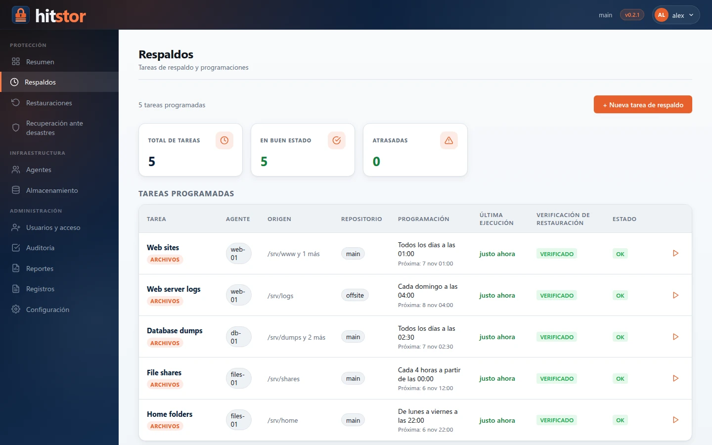
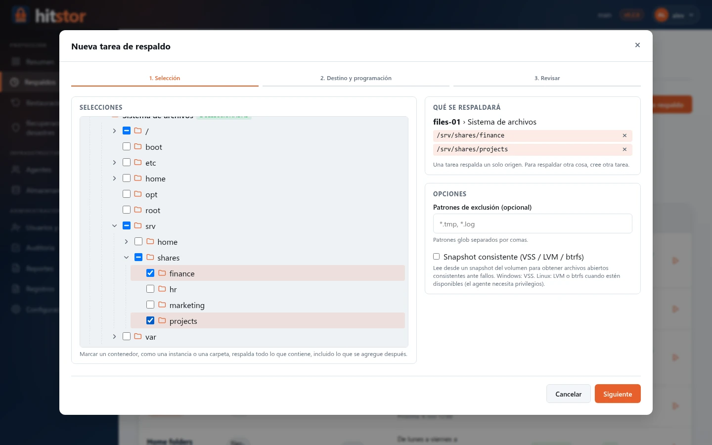
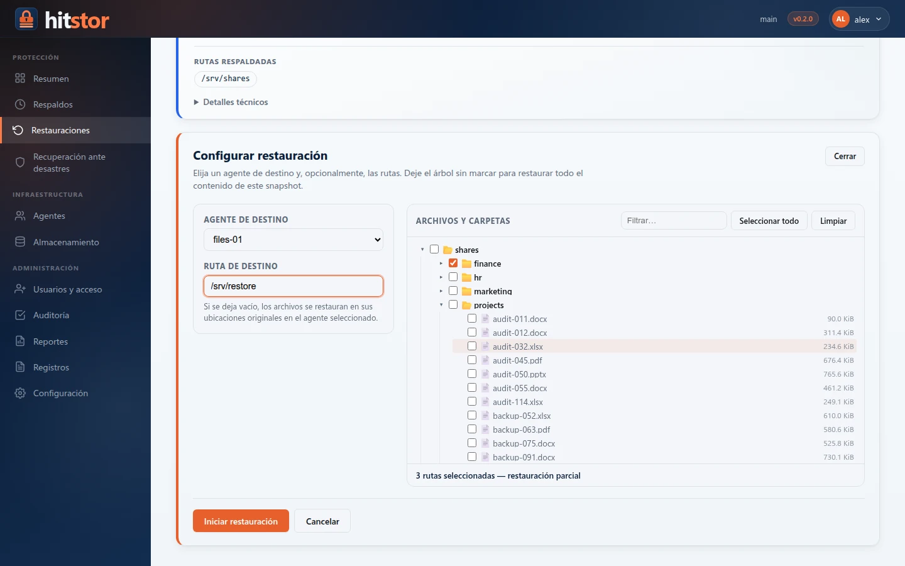
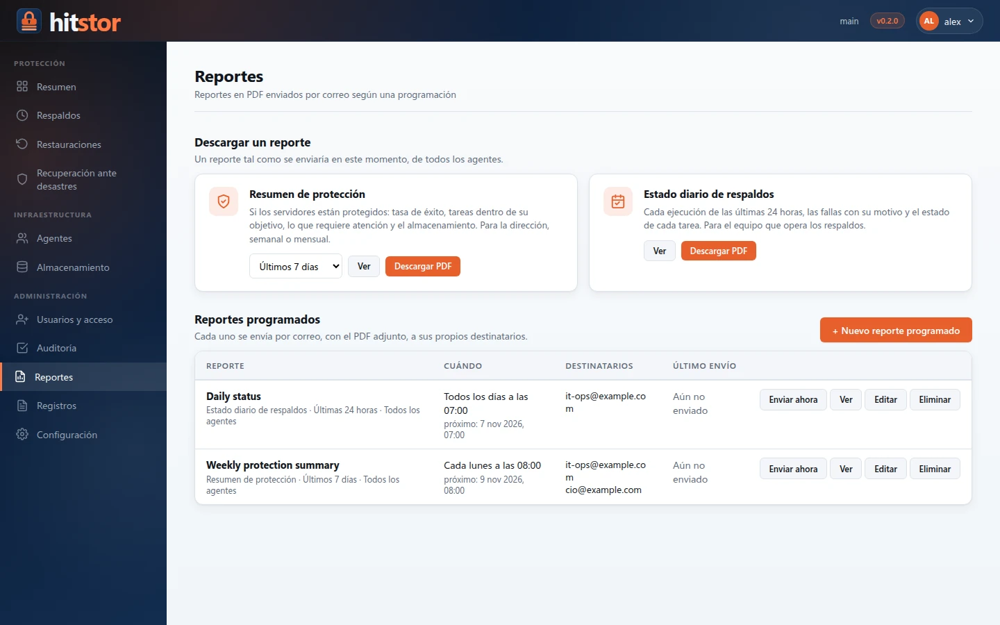
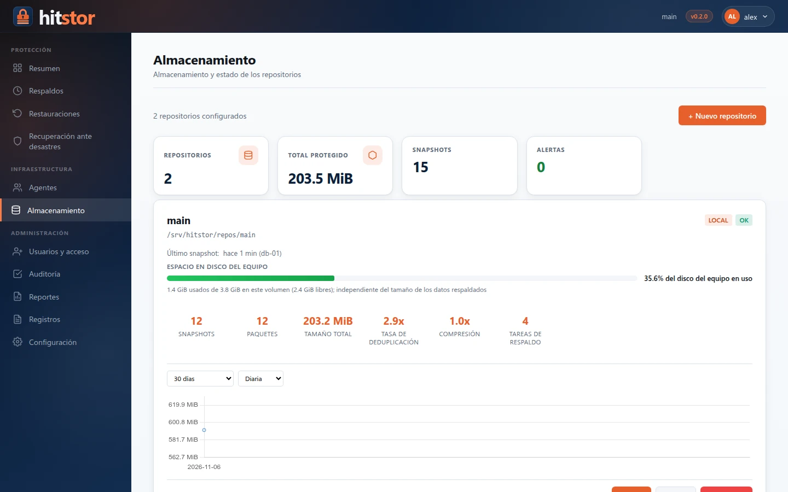

HitStor¶


Respaldos cifrados y deduplicados para Windows y Linux: servidor, agentes y dashboard web.

HitStor respalda archivos y aplicaciones de sus equipos Windows y Linux en un repositorio que usted controla: un disco local o cualquier bucket compatible con S3. Un servidor central programa el trabajo, los agentes de cada equipo hacen los respaldos y las restauraciones, y un dashboard web le permite a su equipo operarlo todo desde el navegador. Los datos se deduplican entre todos los equipos, se comprimen con Zstd y se cifran con AES-256-GCM antes de escribirse.
Características¶
-
Cifrado y deduplicación
Fragmentación FastCDC (256 KiB–4 MiB), deduplicación entre equipos, compresión Zstd y AES-256-GCM. Repositorios locales y compatibles con S3.
-
Servidor y agentes
Un servidor y agentes para Linux (amd64, arm64) y Windows que corren como servicios, se comunican por gRPC sobre TLS y solo envían datos nuevos.
-
Respaldos programados y verificados
Programación cron con zonas horarias, instantáneas consistentes (VSS, LVM, btrfs) y una verificación de restauración automática después de cada respaldo.
-
Restauración y recuperación ante desastres
Explore instantáneas, restaure archivos donde los necesite o reconstruya un equipo completo con el asistente de recuperación ante desastres.
-
SQL Server y plugins
Plugins de carga de trabajo firmados e instalados por agente. El plugin de SQL Server hace respaldos completos, diferenciales y de log mediante VDI, con restauración a un punto en el tiempo.
-
Usuarios, roles y auditoría
Cuentas con roles por agente, verificación en dos pasos obligatoria y un registro de auditoría a prueba de alteraciones.
-
Reportes PDF por correo
Resúmenes de protección y reportes de estado diario, enviados por correo según una programación mediante SMTP o Microsoft 365.
-
Fácil de instalar
Instaladores de Windows, paquetes
.deb/.rpm, instaladores autoextraíbles para Linux y una imagen de Docker. Dashboard en inglés y español.
Un vistazo al dashboard¶





Por dónde empezar¶
| Quiero… | Lea |
|---|---|
| Probar HitStor en pocos minutos | Inicio rápido |
| Instalar el servidor en Windows | Windows Server |
| Instalar el servidor en Linux | Instalación rápida en Linux o Paquetes de Linux |
| Proteger un equipo | Agente de Windows · Despliegue de agentes |
| Respaldar SQL Server | SQL Server |
| Dar acceso a mi equipo | Usuarios y acceso |
| Actualizar desde la 0.1 | Actualización |
Secciones de la documentación¶
| Sección | Qué encontrará |
|---|---|
| Instalación | Docker, paquetes e instaladores de Linux, servidor y agente de Windows, actualizaciones |
| Guía del usuario | Respaldos, restauraciones, instantáneas, retención, plugins, SQL Server, recuperación ante desastres |
| Administración | Puesta en marcha, TLS, usuarios y acceso, tareas, programación, reportes, monitoreo, seguridad |
| Referencia | Comandos, configuración, variables de entorno, APIs gRPC y HTTP del dashboard, funcionamiento interno |
| Guía de desarrollo | Organización del código, arquitectura de plugins, compilación y empaquetado, pruebas, versiones |